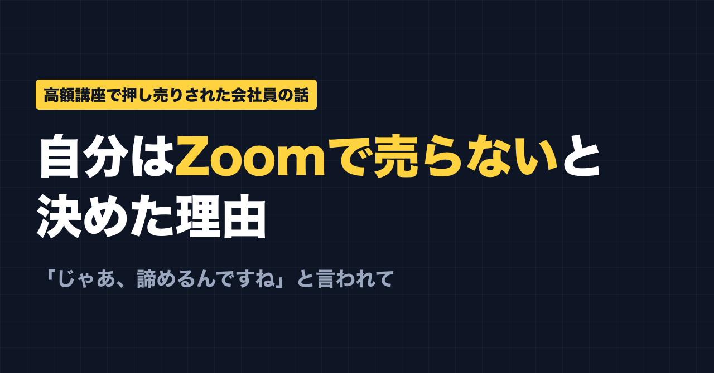
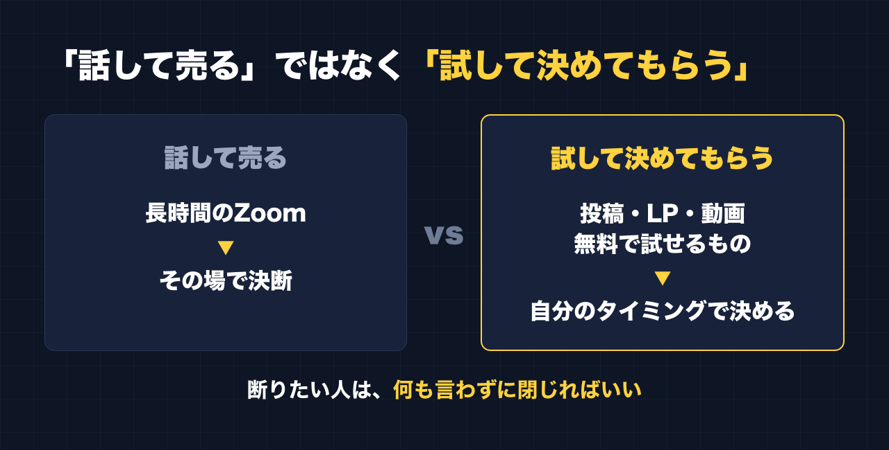

1. タイトルをコピーして、note のタイトル欄に貼る
2. 「本文1をコピー」から順にコピーし、note の本文に貼る
3. 青いラベルの位置に、images フォルダの同じ名前の画像を入れる（本文には貼られません）
※ 見出しが普通の文字になった場合は、その行を選んで「大見出し」を設定してください

「じゃあ、諦めるんですね」
Zoom の画面の向こうから、そう言われました。
1時間か、2時間か。長い時間、話を聞いたあとでした。最後に勧められたのは高額な商品。私が断ると、返ってきたのがこの一言です。
あのとき感じたのは、単純に「嫌だな」という気持ちでした。
この記事では、その体験から私が決めたことを書きます。講座の名前や、誰に言われたかは書きません。特定の誰かを責めたいわけではないからです。書きたいのは、「自分は同じ売り方をしない」と決めた理由と、いまの正直な状況です。
副業の講座に、いろいろお金を払ってきた
私は会社員で、4人の子どもの父親です。PTA 会長もやっています。副業は、帰宅後の短い時間でやっています。
これまで、SNS運用、FX、物販、アフィリエイトと、いくつかの副業に手を出してきました。そのたびに、いろんな講座にお金を払ってきました。
最近は「AIで稼ぐ」という発信がとても増えました。よく見る流れはこうです。
- まず無料のプレゼントを配る
- 勉強会や Zoom に呼ぶ
- そこで高額な商品を勧める
私もこの流れの中に入って、お金を使いました。でも、稼げるようにはなりませんでした。
「じゃあ諦めるんですね」が残ったもの
冒頭の一言に話を戻します。
断った理由は、私の側の事情です。でも、あの言い方をされると「断る＝諦める人」という扱いになります。自分で考えて決めたことが、別の意味に置き換えられてしまう。それが嫌でした。
そしてもう一つ、あとから気づいたことがあります。
どの講座も、根本は同じことを言っていた
いくつかの講座を受けて振り返ると、言われていたことの根本は、ほとんど同じでした。
- 続ける
- 売れている人を真似る
- 手を動かす
そして、資金が増えてきたら、自分の色を出していく。
どれも大事なことだと、今でも思っています。実際、私は別で運用しているアカウントで、伸びている投稿の構成を真似してみたことがあります。それまで反応が100にも届かなかったのに、その1本は表示6.4万回まで伸びました。ただ、その後の投稿は、いいね一桁台に戻りました。真似ることには効果がある。でも、続けないと伸びは続かない。講座で言われていたとおりでした。
言いたいのは、講座が無意味だったということではありません。「高いお金を払わないと手に入らない秘密」ではなかった、ということです。
自分は、Zoom や対面で売らないと決めた
この体験から、私は一つ決めました。
自分が何かを売るときは、Zoom や対面で売らない。
代わりに、こういうもので判断してもらうことにしました。
- 普段の投稿
- 商品の説明ページ（LP）
- 動画
- 無料で試せるもの
長時間話して、その場の空気で決めてもらうのではなく、読んで、見て、試してから、自分のタイミングで決めてもらう。断りたい人は、何も言わずに閉じればいい。それで誰にも責められない形にしたかったのです。

私が作っている「副業ドラフト」というツールも、この考えで作りました。AIの質問に答えるだけで、副業に使える自分の強みを整理して、Threads の下書きを作ります。下書き3本までは無料で試せます。試して合わなければ、それで終わりにできます。
正直に、いまの状況
ここは隠さずに書きます。
- アフィリエイトでは、少し売れたことがあります
- 自作の「副業ドラフト」は、今のところ売上ゼロ、利用者ゼロです
- 脱サラは、まだ遠いです
さらに言うと、副業ドラフトは、しばらく誰も使えない状態になっていました。自分で客として試したときに気づいたのですが、使っていた API キーに有効期限があって、約7週間、最初のボタンを押すとエラーになっていたのです。今は直してあります。
「話さずに売る」と決めたからといって、うまくいっているわけではありません。むしろ、話して売るほうが早いのかもしれません。それでも、あのとき自分が嫌だったことを、人にはしたくない。そこは変えないつもりです。
目標は脱サラです。できれば月100万円。今の自分からすると夢の話ですが、夢として置いています。
講座を選ぶ前に、私が見るようにしていること
最後に、これから講座にお金を払うか迷っている人へ。ここに書くのは、私の体験から来た「私の見方」です。正解ではないので、参考程度に読んでください。
- 申し込む前に、無料で中身を試せるものがあるか
- 断ったときに、どう扱われるか（責められる、急かされる、ならやめておく）
- 「今日だけ」「この場で決めて」と、その場で決めさせようとしていないか
- 教えてくれる中身が「続ける・真似る・手を動かす」以上の何なのか、説明できるか
- 「必ず稼げる」「誰でも月◯万」のような言い方をしていないか
- 売っている人の、普段の投稿や発信を読んで納得できるか
- 支払う金額を、自分の生活を崩さずに出せるか
一つでも引っかかったら、その日は決めずに持ち帰る。それくらいでちょうどいいと、今は思っています。
そして、講座に入る前でも、入らなくても、今日からできることはあります。続ける。伸びている人を真似る。手を動かす。どの講座でも、結局そこに戻ってきました。
ここからは宣伝です。
関連する有料記事（準備中）：「LINE公式の導線を、外部ツールなし・無料プランで1日で組んだ全手順」
話さずに売る仕組みの一つとして、LINE公式アカウントを標準機能だけで組んだ記録です。
公式LINEでは、発信や副業に使えるプロンプトを配っています。「特典」と送ると、LINE限定のプロンプト5本が届きます。
https://lin.ee/RzyA13P
自分の強みを整理して、SNSの投稿の下書きまで作れるツール「副業ドラフト」も作っています。Threads の下書き3本までは無料で試せます。
https://note-threadssf.onrender.com
最後まで読んでいただき、ありがとうございました。